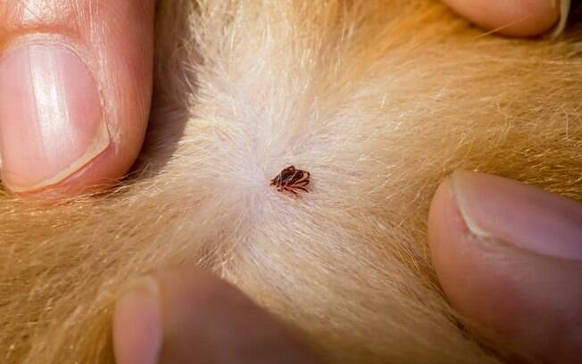

O QUE MEU DOG TEM?

Como detectar.
-coceira;
-inflamação local;
-feridas e queda de pelos;
Pode ser "ALERGIA".
Para tratar: pode ser utilizado um antialérgico e pomada para cicatrização das feridas. Procure um Médico Veterinário.
-perda de apetite;
-vomito e diarreia com presença de sangue;
-cansaço;
Pode ser "PARVOVIROSE".
Para ser tratado deve se levar imediatamente á uma clinica veterinária.
É uma doença muito grave e é altamente transmissível!
-salivação excessiva;
-ficar somente deitado;
-incoordenação;
Pode ser "INTOXIÇÂO POR VENENO".
Para tratar leve de imediato ao Médico Veterinário!
Mas coisas que podem ajudar são: carvão ativado e ovo cru.
-carrapatos em excesso;
-Petéquias (pontinhos vermelhos em locais como abdômen, gengiva e olhos);
-Hematomas;
-Sangramento,Perda de peso e febre;
Pode ser "DOENÇA DO CARRAPATO".
Para tratar fique sempre atento aos sintomas quanto mais cedo ser diagnosticado mais a chance de cura e, tenha uma alimentação com água sempre disponível, ofereça água de coco, ofereça vegetais e frutas.
-lacrimejamento excessivo;
-coceira nos olhos;
-secreção ocular;
-olhos mais fechados
-vermelhidão e a córnea muda de cor, ganhando tonalidade esbranquiçada ou azulada;
Pode ser "ÚLCERA CÓRNEA".
Para ser tratar geralmente será prescrito um colírio para úlcera de córnea em cães, além do uso do colar elizabetano (ou colar cirúrgico) para evitar que o pet coce e machuque ainda mais a região. Procure um Médico Veterinário.
-febre, icterícia, fraqueza, depressão;
-falta de apetite;
-membranas mucosas pálidas e esplenomegalia (aumento do baço);
-perturbações da coagulação e nervosas.
Pode ser "BABESIOSE CANINA".
Para tratar é sempre bom estar atento ao comportamento do seu cão, é o dipropionato de imidocarb (5-6,6 mg/kg/IM ou SC, duas doses, com intervalo de 14 dias entre elas), prescrito pelo seu Médico Veterinário. Evite que o seu dog tenha carrapatos e contatos com animais de rua sem estar com as vacinas em dia.
Dicas:
*A vacinação adequada protege o cão de uma série de microrganismos, incluindo aqueles que causam a parvovirose, a cinomose e a leptospirose, doenças que podem deixar sequelas, e até matar os pets. Desde filhotes, os cães estão sujeitos a contrair diversas doenças. Deixe a vacinação do seu pet sempre em dia!
*Mantenha a higiene do cão em dia com banho, tosa, cortar unhas, escovar o pelo e também os dentes. Todos esses são cuidados básicos e que devem se tornar um hábito para manter a higiene do seu cão em dia.
*Separe um tempo para brincadeiras, dedique diariamente um tempo de qualidade ao seu cão, de forma a construir uma bela amizade entre vocês. Esse contato maior entre cão e o dono é muito importante para o bem-estar dele e para deixá-lo sempre feliz e satisfeito.
*Leve-o regularmente para se consultar com o veterinário, para ter a certeza de que está tudo bem com a saúde do seu cão, anote em sua agenda visitas anuais ao veterinário e não somente quando o pet apresentar algum comportamento ou sintoma diferente. Nestas visitas, aproveite para tirar todas as dúvidas e colocar em dia as vacinas. Se necessário, além da avaliação física, o veterinário pode solicitar alguns exames de rotina. Além disso, quanto mais velho for o seu cão, maior será a frequência de consultas, passando de anuais para semestrais.
SALVADOG&CAT CLÍNICA VETERINÁRIA.